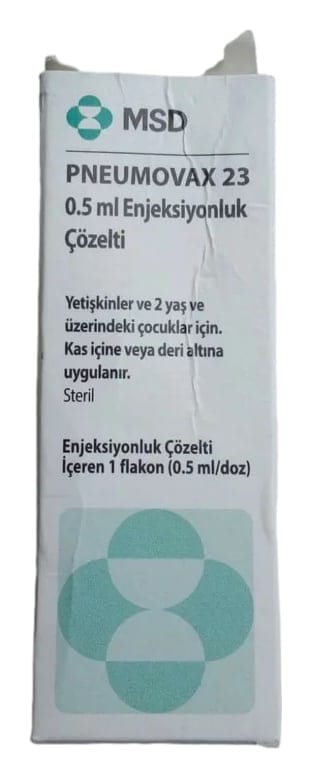

Pneumovax 23 0,5 ml Enjeksiyonluk Çözelti İçeren Flakon, 1 Adet

Ne için kullanılır
KT · Bölüm 1PNEUMOVAX 23 0,5 mL enjeksiyonluk çözelti içeren flakon, berrak ve renksiz çözelti halindedir ve tıpası (kauçuk) ve geçme kapağı (plastik) olan bir flakon (cam) içinde 0.5 mL çözelti halinde 1 veya 5 dozluk ambalajlarda bulunmaktadır. PNEUMOVAX 23 bir pnömokok (menenjit/pnömoni bakterisi) aşısıdır. Aşılar sizi veya çocuğunuzu bulaşıcı hastalıklara karşı korumakta kullanılır. Doktorunuz sizin veya çocuğunuzun (iki yaş ve üzerindeki) pnömokoklar adı verilen bakterilerin neden olduğu şiddetli enfeksiyonlara (hastalıklara) karşı korunmanıza yardımcı olmak üzere PNEUMOVAX 23 aşısı yaptırmanızı tavsiye etmektedir. Pnömokoklar akciğerlerde (özellikle zatürre) ve beyin ve omurilik üzerindeki tabakalarda Belge DAŞMAMLAİİLPNÜBAOMNRDAktANİŞINXXE3kaNndam(bakteremişsevema Altanhzehirkenmesi)enfeksiyanlara
neden olabilir. PNEUMOVAX 23 sizi sadece aşıda bulunan bu bakteri tiplerinin neden olduğu pnömokok enfeksiyonlarına karşı koruyabilecektir. Ancak, aşıda bulunan 23 pnömokok tipi neredeyse pnömokok kaynaklı tüm enfeksiyonlara (yaklaşık onda dokuzu) neden olan tipleri kapsamaktadır.
Size veya çocuğunuz aşı verildiğinde vücudun doğal savunması, pnömokok enfeksiyonlarına karşı korunmaya yardımcı olmak amacıyla antikorlar (bağışıklık proteinleri) üretir.
Pnömokok enfeksiyonları tüm dünya genelinde görülür ve hemen her yaştan kişide ortaya çıkabilir, ancak en çok aşağıdaki özelliklere sahip kişilerde görülür:
e Yaşlılar.
e Dalakları alınmış veya dalakları çalışmayan kişiler.
e Uzun süren hastalıklar veya enfeksiyonlar (örneğin kalp hastalığı, akciğer hastalığı, diabetes mellitus (şeker hastalığı), böbrek hastalığı, karaciğer hastalığı veya HIV enfeksiyonu (insan bağışıklık eksikliği virüsü) nedeniyle enfeksiyonlara karşı direnci düşük olan kişiler.
e Bazı hastalıklar için (örneğin kanser) aldığı tedavi nedeniyle enfeksiyonlara karşı direnci düşük olan kişiler.
Beyin ve omuriliği kaplayan tabakalardaki pnömokok enfeksiyonları (menenjit/pnömoni bakterisi) bazen kafatasının yaralanması ve çatlamasını takiben, çok seyrek olarak da bazı tıbbi operasyonlardan sonra meydana gelir. PNEUMOVAX 23 bu enfeksiyonların tümünü önleyemeyebilir.
Pnömokok enfeksiyonları ayrıca sinüsler, kulaklar ve vücudun başka yerlerinde de meydana gelebilir. PNEUMOVAX 23'ün sizi veya çocuğunuzu bu daha küçük çaplı enfeksiyonlara karşı koruyacağı düşünülmemektedir.